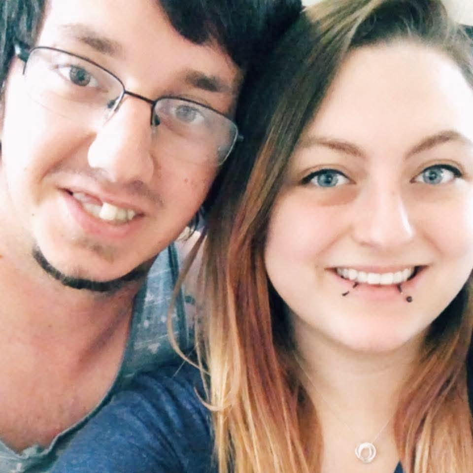

Unknown · age - Engaged to Christopher Thomas Moore, FAMILY ACCOUNT
Life Story
Briautumn Leigh Grubenhoff is engaged to Christopher Thomas Moore {FAM}. Geni lists her as his fiancée, not as a wife {SUP}.
Bri and Chris raise three children together as one family unit {FAM}.
Photo Gallery
Living family members are left out of public photos.
Briautumn Leigh Grubenhoff

Chris and Bri when they first started dating.
Sources and Evidence
Couple profile Doc + Geni, read-only 2026-11-02 FAMILY ACCOUNT/SUPPORTED
Grades: DOCUMENTED an original record says it · SUPPORTED several records point to it · FAMILY ACCOUNT the family's own telling · UNPROVED a lead, not proved.
Research Notes and Open Questions
Children's names and birthdays are not shown on this page, as all three are minors.
Bri's profile is filed in Chris's folder, like other spouses in their partner's folder.